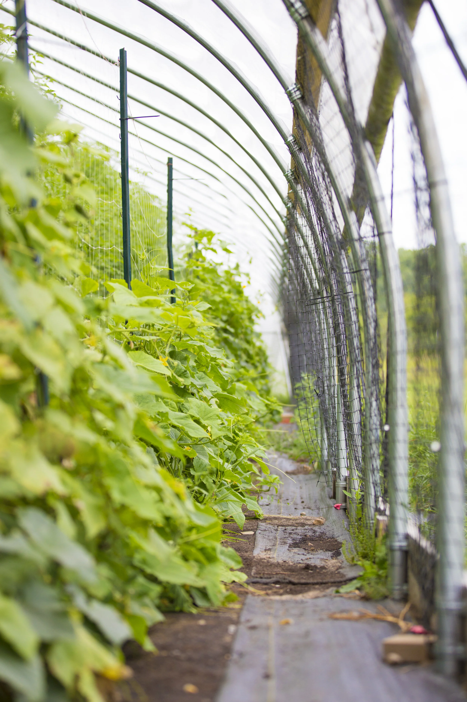

Passive Solar Hoop Houses
A passive solar hoop house uses sunlight to warm a plastic-covered growing space without supplemental heating. The covering reduces exposure to wind and precipitation and creates a protected environment for crops.
Hoop houses are also commonly called high tunnels or polytunnels. They can support early spring crops, heat-loving summer crops, and late fall production.

Hoop Houses, Low Tunnels, and Greenhouses
Hoop House or High Tunnel
A walk-in structure made from a frame, often steel hoops, covered with plastic film.
- Usually relies primarily on passive solar heating
- Often used for crops grown directly in the soil
- Requires ventilation to manage temperature and humidity
Low Tunnel
A smaller covering supported by hoops over individual beds or crop rows.
- Can use row cover or clear greenhouse film
- Usually costs less than a walk-in structure
- Must be opened or removed for crop access
Hoops are made from 10-foot lengths of galvanized electrical metallic tubing (EMT), shaped with a hoop bender.
Greenhouse
A protected growing structure that often provides more active environmental control than a typical high tunnel.
- May use supplemental heating and automated ventilation
- Can support propagation and controlled production
- Generally involves greater infrastructure and operating costs when actively climate-controlled
Benefits of Protected Growing
- Extends the production and harvest season
- Protects crops from rain and wind
- Can improve crop quality and harvest reliability
- Creates opportunities for earlier or later sales
Limitations of Protected Growing
- Requires construction and maintenance investment
- Can overheat quickly on sunny days
- Requires irrigation because most rainfall is excluded
- Needs ventilation and humidity management
- Does not eliminate frost, pest, or disease risks
Planting in Southeast Michigan
Reduced winter light slows growth. Planning ahead helps crops establish before the lowest-light period and supports harvests across multiple seasons.
February 1
- Spinach
- Arugula
- Baby kale
- Radish
- Turnip
March 1
- Lettuce
- Salanova lettuce
- Kale
- Chard
- Collard greens
April 15
- Tomato
- Pepper
- Eggplant
- Cucumber
- Summer squash / zucchini
These warm-season crops are sensitive to cold. Assess conditions inside the hoop house and provide additional protection when needed.
August 15
- Kale
- Collard greens
- Chard
- Carrots
- Scallions
September 15–October 15
- Lettuce
- Arugula
- Baby kale
- Radish
- Turnip
- Spinach
Possible Later Plantings
The following crops could be planted as late as November 1:
- Arugula
- Baby kale
- Spinach
Schedule source: Course planting-date chart for passive solar hoop houses in southeast Michigan. From lecture 9 materials
Choosing a Site and Designing the Structure
Drainage and Ground Preparation
- Choose a well-drained site where runoff will not flow into the structure.
- Address drainage and elevation problems before construction.
- Use a reasonably level site for construction, bed preparation, and irrigation.
- Minimize soil compaction during preparation.
- Evaluate drainage improvements, such as perimeter drains, according to the site's needs.
Orientation, Sunlight, and Wind
Both north–south and east–west orientations can work. The best choice depends on seasonal light needs, latitude, surrounding shade, crop height, ventilation, and wind exposure.
- Avoid shading from nearby buildings or trees.
- Consider how tall or trellised crops will shade adjacent rows.
- Account for prevailing winds when planning ventilation and structural protection.
- Locate windbreaks carefully so they do not create excessive shade or unwanted snow accumulation.
Size and Access
- Match the structure's size to production goals, budget, and labor capacity.
- Plan bed widths, aisles, trellising, and irrigation before selecting dimensions.
- Size doors for the equipment that needs to enter.
- Include access for harvesting, maintenance, and replacing the covering.
Ventilation and Covering
- Roll-up sides and end doors can provide ventilation.
- Use attachment systems that allow damaged or aging plastic to be replaced.
Construction Costs and Return on Investment
What Determines Cost?
- Structure dimensions and frame specifications
- Site preparation and drainage work
- Plastic covering, doors, and ventilation systems
- Irrigation and optional environmental controls
- Shipping, installation, and labor
- Future maintenance and covering replacement
Buying a used structure may reduce the purchase price, but dismantling, transportation, missing parts, and reassembly must also be considered.
Cost Examples
The estimated cost is $7,000–$11,000 for a 26-foot by 96-foot high tunnel.
Evaluating Financial Returns
A hoop house's payback period depends on yields, sale prices, operating costs, labor, and initial investment. Paying for the structure within a few seasons is possible in some situations but is not guaranteed.
Low Yield and Low Price
Revenue may be insufficient to recover the investment within the planned period.
Moderate Yield and Price
The structure may provide a viable return if revenues cover production costs and the investment.
High Yield and Price Premium
Strong yields and favorable markets can improve profitability and shorten the payback period.
Managing Crops Inside Hoop Houses
Disease Management
- Protection from rain can reduce splashing and leaf wetness associated with some diseases.
- Poor ventilation and persistent humidity can favor other diseases.
- Monitor temperature, humidity, condensation, and airflow.
- Continue crop rotation and sanitation practices.
- Use healthy transplants and appropriate disease-free seed.
Pest Management
Hoop houses change pest conditions rather than simply eliminating pests. Some pests may be excluded, while others, including aphids, can multiply rapidly in protected environments.
- Scout regularly for pests and beneficial organisms.
- Combine prevention, biological control, and appropriate targeted treatments.
- Match biological-control organisms to the pest and environmental conditions.
- Follow species-specific temperature guidance for beneficial insects.
Weed Management
- Black plastic mulch or other suitable ground covers can suppress weeds.
- Plan cultivation around irrigation lines and crop spacing.
- Prevent weeds from establishing in beds and walkways.
Irrigation and Soil Moisture
- Supply irrigation because the structure excludes most rain.
- Monitor moisture within the crop's active root zone.
- Use soil-moisture sensors..
- Adjust watering to crop growth, soil conditions, and weather.
- Check for uneven watering, leaks, and clogged emitters.
Sources and Supporting Materials
- Lecture 9
- The Market Gardener Chapter 11 p. 119-126
- hightunnels.org
- Design and Construction of the Penn State High Tunnel